ACT NOWLineup · Due Sun 12:55 PM
Move Tee Higgins out of your FLEX
Higgins is doubtful and projected for 2.1 points. Jayden Reed gives you a +8.4 projected point advantage.
91% confidence · Injury report updated 8m ago

BR FANTASYFRIDAY, SEPTEMBER 12 · WEEK 2
Three moves can improve your lineup before Sunday.
Higgins is doubtful and projected for 2.1 points. Jayden Reed gives you a +8.4 projected point advantage.
Available in your league and up 18% in adds today. His role score rose after 11 touches in Week 1.
The model found two balanced offers that lift your playoff odds without weakening your starting lineup.
BIG PLAY LEAGUE · WEEK 6
Your league’s week, packaged for the group chat.
Fourth & Long survived Monday night by 0.08 points — the closest finish in league history.
Malik’s acquisition of De’Von Achane added 24.8 points and moved his title odds from 9% to 14%.
Highest score this season · 96% lineup efficiency
Choose the sections, add a note, or change the tone.
PERSONALIZE YOUR EXPERIENCE
Switch anytime. Your data and recommendations stay the same — only the way we explain them changes.
Reed projects 8.4 points higher, driven by Higgins’ injury status and a favorable slot matchup.